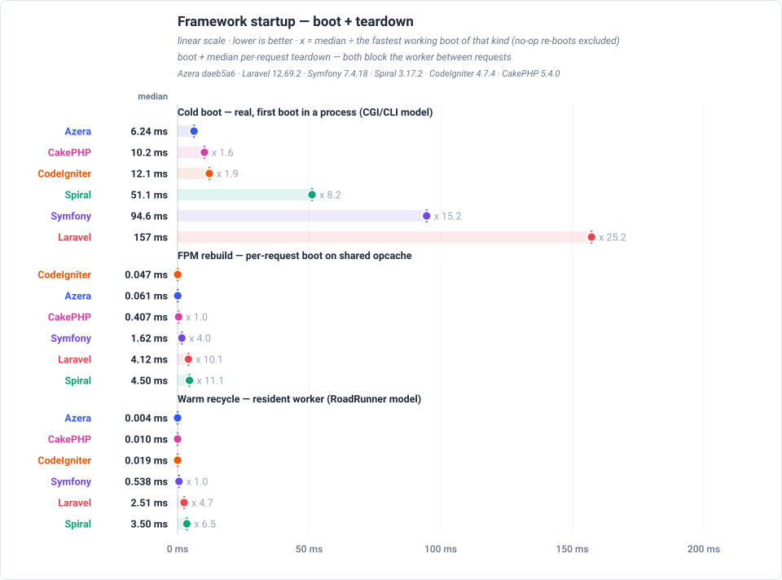
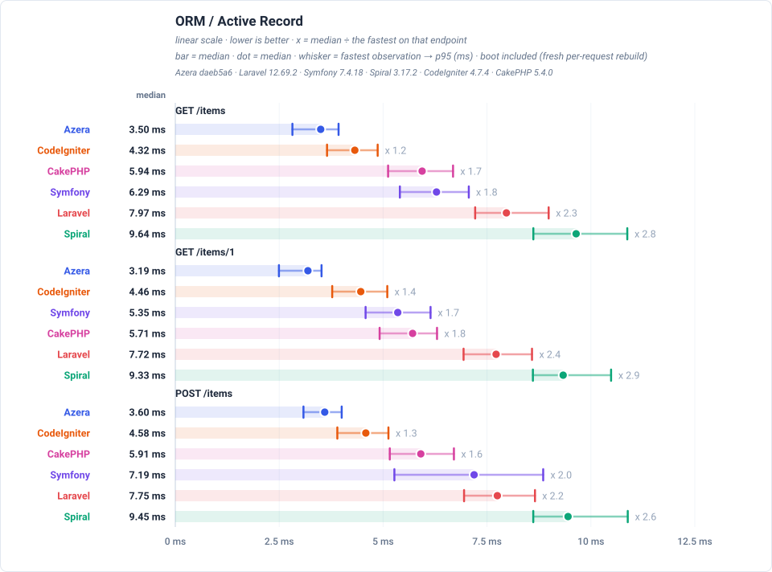
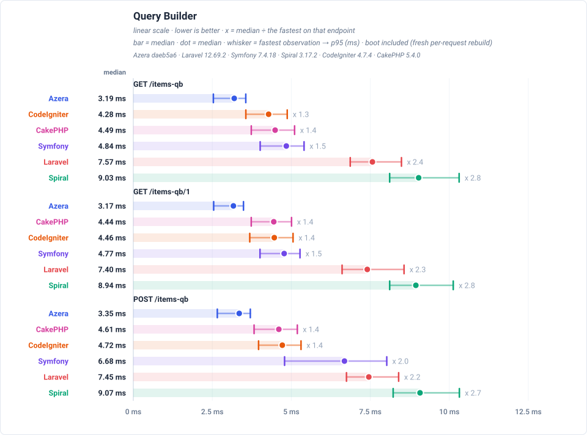
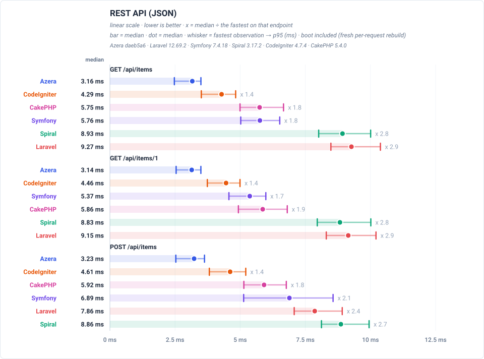
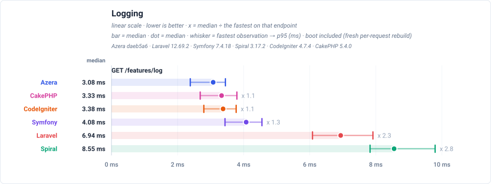
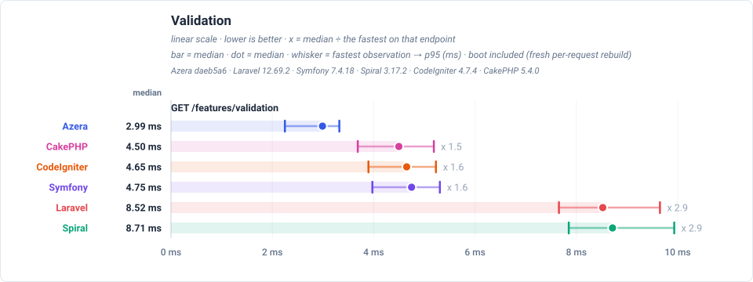
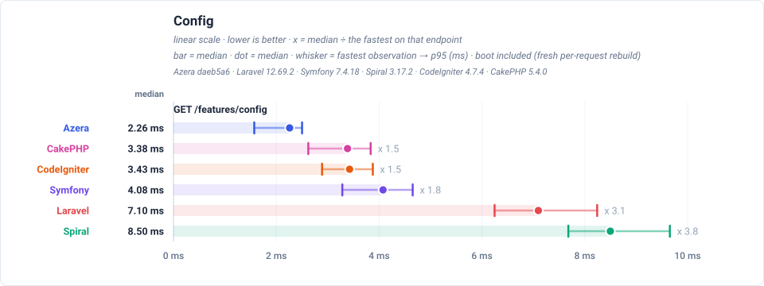
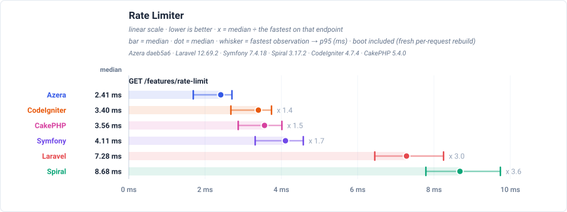

Feature benchmarks
GET /api/routing/1 — matches a typed route and dispatches it to a constant handler — no template and no database access — so the band measures route matching and dispatch and nothing else. The endpoint sits in a deep bucket of the route table, which is where a compiled index actually saves work. `/echo` is drawn beside it: the same constant handler behind a STATIC route, i.e. the floor that route matching is measured against — and, like any floor, it is mostly the SERVER rather than the framework. Measured 2026-11-24 with `temp/echo-ab.php` on the bench VM, the entire framework layer on `/echo` costs single-digit microseconds, inside rows that print two to three orders of magnitude more. A difference of a few microseconds there is below the run-to-run spread, so read `/echo` as the common floor and NOT as a comparison between entrants; the charts that separate frameworks are the ones with real work in them.

GET /items — loads one page of the 1,000 seeded rows through each framework's ORM / Active Record layer: 20 items plus a COUNT for the pagination total. The `-fast` band repeats that page with hydration switched off, so the cost of building one object per row can be read directly instead of inferred.

GET /items-qb — builds the same page of 20 items with each framework's query builder instead of its ORM, so the two data-access styles can be compared directly.

GET /api/items — serves the same page of items as a JSON response rather than HTML, which adds serialization to the ORM work. The `-fast` band repeats that response with hydration switched off, so serialization cost and hydration cost can be told apart.

GET /features/log — logs a method entry and exit through the framework's own logger, and reports the records that logger captured. Every entrant uses the sink its own stack provides and every one of those sinks is in-process, so the row measures the logging path rather than disk or stderr I/O: Azera its PSR-3 `MemoryLogger`, Laravel `Log` → `LogManager` → Monolog's in-memory `TestHandler`, Symfony a PSR-3 logger registered as the `logger` service, Spiral `LogsInterface::getLogger()` feeding its `ListenerRegistry`, CakePHP `Log::write()` into an `ArrayLog` engine, CodeIgniter `log_message()` into a buffering handler, and Phalcon its own `Phalcon\Logger\Logger` with an in-memory adapter. NONE of them declares the logging as advice: Azera has `#[Log]`, but this row calls the logger directly so that all seven measure the same work — intercepting a logger would charge proxy cost to a chart about logging, which is what the `aop-*` rows exist to isolate. Phalcon's logger is not a PSR-3 implementation — it is the framework's own logger API — so the row demonstrates Phalcon logging, not interchangeable PSR-3 logging.

GET /features/db-events — writes one row and reads one COUNT on an autocommit connection, so the framework's own database-observation hook can be read back: Azera's PSR-14 `DatabaseEvent` classes, Laravel's `DB::listen()`, the PSR-3 logger Doctrine DBAL and Cycle DBAL route through the driver, CodeIgniter's `DBQuery` event, CakePHP's driver query logger, and Phalcon's `db:` events manager. Every listener is attached once per process, so what the row prices is the hook, not its registration. Statements that describe the CONNECTION or the SCHEMA rather than the work — `PRAGMA` setup, `pragma_table_info`/`table_xinfo`/`index_list` reflection and `sqlite_master` lookups — are filtered out of the reported payload on every entrant, because whether a hook sees them depends on when it was attached relative to connection setup and how much introspection the ORM does per operation. Neither is the feature. All seven therefore report one entry per real statement: the upsert and the COUNT. Phalcon's `db:beginTransaction` / `db:commitTransaction` capability is real but is exercised by `/features/aop-tx-direct`, the control row that does open a transaction; wrapping this row's write in one charged it for something the feature is not about and reported two events no other entrant produces.

GET /features/events — dispatches an in-process event to registered listeners. On Azera the item it writes goes through a generated `#[Transactional]` proxy, so this row includes interception cost the other entrants do not pay here.

GET /features/validation — validates a payload with the framework's own validator.

GET /features/config — resolves a value from the framework's config repository.

GET /features/rate-limit — checks a cache-backed rate limiter, which has long since denied the caller.

Latency by endpoint (ms, median — lower is better) (sub-line: boot + handle + post-response cleanup, which sum to the total) — cold rows and charts are end-to-end: each iteration pays a fresh framework boot inside the request clock (FPM story)
| Request | Workload | Azera | Laravel | Symfony | Spiral | CodeIgniter | CakePHP |
|---|---|---|---|---|---|---|---|
GET /api/routing/1 | no DB — typed route + constant body (routing only) | — | — | — | — | — | — |
GET / | no DB — routing + template only | 2.21 0.06+2.15+0.00 | 6.48 4.08+2.40+0.00 | 3.80 1.63+2.17+0.00 | 8.29 4.55+3.72+0.02 | 3.10 0.02+3.06+0.02 | 3.19 0.38+2.81+0.00 |
GET /echo | no DB — static route, constant body (throughput floor) | — | — | — | — | — | — |
GET /items | 20 of 1000 items (page 1, + COUNT) | 3.50 0.06+3.43+0.01 | 7.97 3.96+4.01+0.00 | 6.29 1.64+4.65+0.00 | 9.64 4.50+5.11+0.03 | 4.32 0.03+4.27+0.02 | 5.94 0.40+5.54+0.00 |
GET /items-fast | 20 of 1000 items (page 1, + COUNT), hydrated rows not built | — | — | — | — | — | — |
GET /items/1 | 1 item by id | 3.19 0.05+3.13+0.01 | 7.72 4.00+3.72+0.00 | 5.35 1.60+3.75+0.00 | 9.33 4.45+4.86+0.02 | 4.46 0.03+4.41+0.02 | 5.71 0.40+5.31+0.00 |
POST /items | 1 row upserted (sentinel #999999) | 3.60 0.05+3.54+0.01 | 7.75 3.99+3.76+0.00 | 7.19 1.66+5.52+0.01 | 9.45 4.48+4.95+0.02 | 4.58 0.03+4.53+0.02 | 5.91 0.40+5.51+0.00 |
GET /items-qb | 20 of 1000 items (page 1, + COUNT) | 3.19 0.06+3.13+0.00 | 7.57 4.07+3.50+0.00 | 4.84 1.62+3.22+0.00 | 9.03 4.52+4.49+0.02 | 4.28 0.03+4.23+0.02 | 4.49 0.40+4.09+0.00 |
GET /items-qb/1 | 1 item by id | 3.17 0.05+3.12+0.00 | 7.40 4.02+3.38+0.00 | 4.77 1.60+3.17+0.00 | 8.94 4.50+4.42+0.02 | 4.46 0.03+4.41+0.02 | 4.44 0.39+4.05+0.00 |
POST /items-qb | 1 row upserted (sentinel #999997) | 3.35 0.06+3.29+0.00 | 7.45 4.05+3.40+0.00 | 6.68 1.63+5.05+0.00 | 9.07 4.52+4.53+0.02 | 4.72 0.03+4.67+0.02 | 4.61 0.40+4.21+0.00 |
GET /api/items | 20 of 1000 items as JSON | 3.16 0.06+3.10+0.00 | 9.27 4.12+5.15+0.00 | 5.76 1.61+4.15+0.00 | 8.93 4.48+4.42+0.03 | 4.29 0.03+4.24+0.02 | 5.75 0.41+5.34+0.00 |
GET /api/items-fast | 20 of 1000 items as JSON, rows not hydrated | — | — | — | — | — | — |
GET /api/items/1 | 1 item by id as JSON | 3.14 0.06+3.07+0.01 | 9.15 4.12+5.03+0.00 | 5.37 1.63+3.74+0.00 | 8.83 4.38+4.43+0.02 | 4.46 0.03+4.41+0.02 | 5.86 0.42+5.44+0.00 |
POST /api/items | 1 row upserted (sentinel #999998) | 3.23 0.06+3.16+0.01 | 7.86 3.99+3.87+0.00 | 6.89 1.65+5.23+0.01 | 8.86 4.46+4.38+0.02 | 4.61 0.03+4.56+0.02 | 5.92 0.41+5.51+0.00 |
GET /features/aop-tx | 1 row upserted (sentinel #888800) | — | — | — | — | — | — |
GET /features/aop-tx-direct | 1 row upserted (sentinel #888800) | — | — | — | — | — | — |
GET /features/aop-tx-explicit | 1 row upserted (sentinel #888800) | — | — | — | — | — | — |
GET /features/aop-cache | COUNT(*) of 1000 rows, cached 10s by #[Cache] (miss = query) | — | — | — | — | — | — |
GET /features/aop-cache-direct | COUNT(*) of 1000 rows, cached 10s by hand (miss = query) | — | — | — | — | — | — |
GET /features/log | no DB — one in-memory log sink per entrant | 3.08 0.05+3.03+0.00 | 6.94 4.01+2.93+0.00 | 4.08 1.64+2.44+0.00 | 8.55 4.34+4.19+0.02 | 3.38 0.03+3.33+0.02 | 3.33 0.39+2.94+0.00 |
GET /features/db-events | 1 row upserted (sentinel #888800) + COUNT(*), events collected | 3.79 0.05+3.74+0.00 | 7.98 3.99+3.99+0.00 | 6.02 1.62+4.39+0.01 | 9.57 4.47+5.08+0.02 | 4.57 0.03+4.52+0.02 | 5.31 0.41+4.90+0.00 |
GET /features/events | no DB — in-process listeners | 3.73 0.06+3.67+0.00 | 7.65 4.02+3.63+0.00 | 4.89 1.61+3.28+0.00 | 9.25 4.46+4.77+0.02 | 4.43 0.03+4.38+0.02 | 4.18 0.40+3.78+0.00 |
GET /features/validation | no DB — validator run | 2.99 0.06+2.93+0.00 | 8.52 4.14+4.38+0.00 | 4.75 1.61+3.14+0.00 | 8.71 4.32+4.37+0.02 | 4.65 0.03+4.60+0.02 | 4.50 0.40+4.10+0.00 |
GET /features/config | no DB — config lookup | 2.26 0.06+2.20+0.00 | 7.10 4.08+3.02+0.00 | 4.08 1.61+2.47+0.00 | 8.50 4.32+4.16+0.02 | 3.43 0.03+3.38+0.02 | 3.38 0.40+2.98+0.00 |
GET /features/rate-limit | no DB — cache-backed limiter | 2.41 0.07+2.34+0.00 | 7.28 4.02+3.26+0.00 | 4.11 1.62+2.49+0.00 | 8.68 4.30+4.36+0.02 | 3.40 0.03+3.35+0.02 | 3.56 0.41+3.15+0.00 |
GET /features/lifecycle-hooks | no DB — a request/response hook stamps a header and sets 203, via each framework's own mechanism | — | — | — | — | — | — |